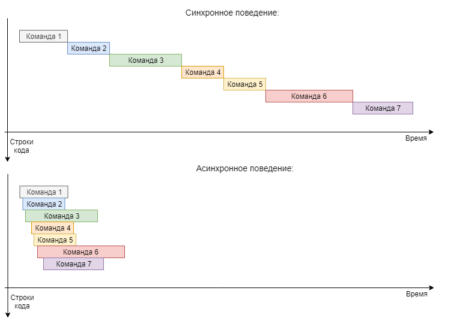
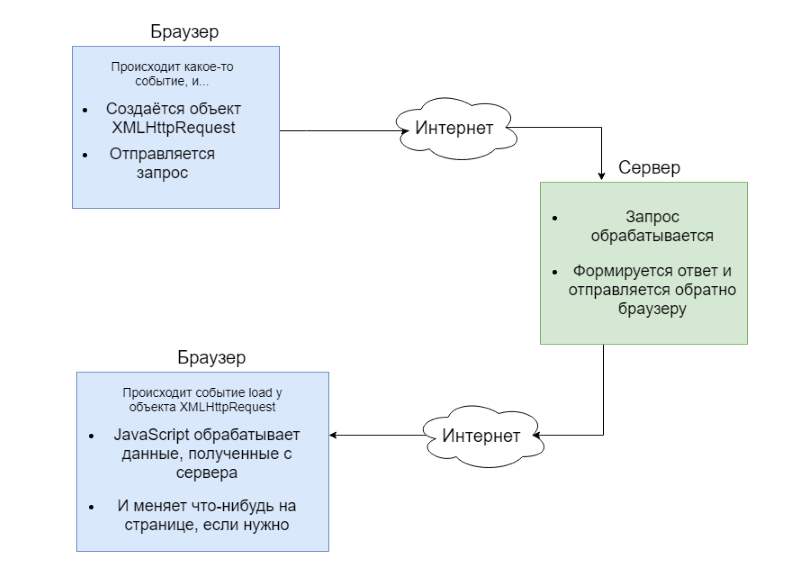
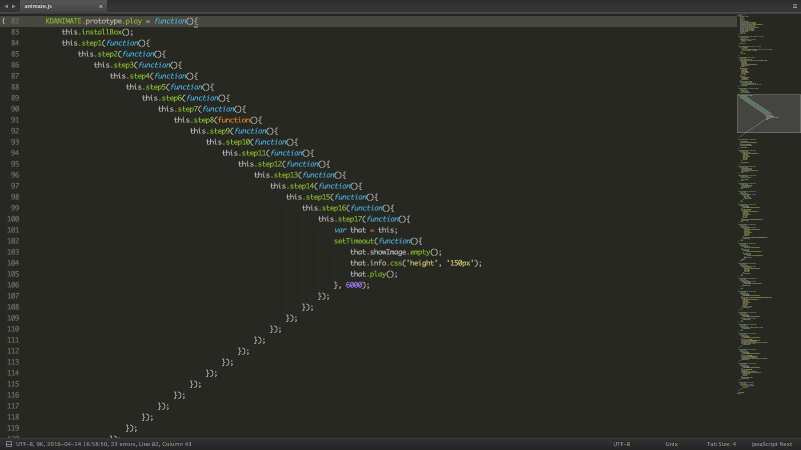

Веб программирование. Фронтенд
Её величество Асинхронность
Содержание лекции
Асинхронность
В JS постоянно приходится сталкиваться с асинхронностью, хотите вы того или не хотите.
Среда выполнения JavaScript построена на концепциях асинхронности: один единственный поток, очередь сообщений, события и Event Loop, - всё это обеспечивает максимальную поддержку асинхронного поведения.
Синхронный код
В синхронной программе, если две строки кода записаны друг за другом, вторая не может начать выполняться, пока не закончит выполнение первая.
Это можно представить как очередь за билетами, например, в кино. Вы не можете заказать и купить билет, пока все люди перед вами не закажут и не купять свои.
Асинхронный код
В асинхронной программе, у вам может быть 2 строчки кода, когда первая строчка запустит на выполнение какое-либо действие, а вторая строчка будет выполнена раньше, чем первая закончит выполнение своего действия.
Асинхронное поведение
Это можно представить, как посетителей ресторана. Вы можете заказать блюдо, и другие люди могут заказать блюда. И чтобы сделать свой заказ, вам не нужно ждать, пока все посетители, заказавшие что-либо перед вами, получат свои приготовленные блюда.
Если посетитель перед вами заказал рагу, а вы аж на 5 минут позже заказали стакан воды, это не будет означать, что сначала будет выполнен заказ первого посетителя.
Порядок выполнения асинхронных задач не зависит от порядка их определения - только от их сложности и времени выполнения.
Асинхронное, или неблокирующее поведение - это когда программа не ждёт завершения какого-либо действия, чтобы начать выполнять следующие.
Асинхронность vs синхронность
Многопоточность и асинхронность
Многопоточность (параллельное выполнение) и Асинхронность (неблокируемость) - это разные понятия, не зависящие друг от друга.
Хотя они и решают одну и ту же задачу - максимально использовать имеющиеся ресурсы компьютера.
Задачи многопоточности
Многопоточность позволяет задействовать все ядра процессора - чтобы они не бездействовали и не простаивали.
Многопоточность нужно применять, когда в программе присутствуют операции, не зависящие друг от друга, и никак друг на друга не влияющие, которые можно распараллелить.
Многопоточность - одновременное параллельное выполнение нескольких действий в программе.
Возможность применения многопоточности (эффективного применения) зависит от конфигурации процессора, на котором выполняется программа, т.е. от количества его физических и виртуальных ядер, а также от задач, которые решает программа (можно ли их выполнять параллельно).
Задачи асинхронности
Асинхронность же позволяет максимально эффективно использовать ресурсы одного потока выполнения (одного ядра процессора). Асинхронность - это отсутствие простоев в работе программы, устранение ситуаций, когда программа ничего не выполняет, в ожидании завершения какого-либо действия.
Поэтому, как правило, асинхронность может использоваться только в том случае, когда программа взаимодействует с каким-либо другим независимым компонентом (файловая система, сеть, другая программа), т.к. обычно только при обращении к стороннему ресурсу, и ожидании от него ответа, в программе может произойти простой.
Значит, асинхронность можно использовать далеко не в любой ситуации. А только (почти) когда операция вызывает простой (т.е. блокирует выполнение программы).
Пример
Вернёмся к примеру с очередью за билетами.
Если все люди стоят в общей очереди и ждут, когда придёт их черёд - это синхронный и однопоточный процесс.
Если открыто несколько касс, и очередей несколько - это синхронный и многопоточный процесс.
Если люди быстро говорят кассиру, что им нужен билет, и уходят заниматься своими делами, не дожидаясь пока кассир зарегистрирует место и всё оформит, и когда вся очередь быстро рассосётся, он станет оформлять билеты, отправляя их по электронной почте покупателям - то это процесс асинхронный.
Многопоточность + асинхронность
Программа может быть многопоточной и синхронной, однопоточной и асинхронной, или и то, и другое сразу - между многопоточностью и асинхронностью нет зависимости.
В большинстве языков программирования от вас зависит, как писать код - использовать многопоточность или не использовать, применять асинхронность или не применять.
Но в JavaScript вам выбора не дают - программа на JS всегда однопоточна и асинхронна.
Примеры
Конечно, мы опять начнём с функции setTimeout() - это самый простой и наглядный пример асинхронного поведения в JavaScript.
// 1 - Выведет на консоль "Hello."
console.log("Hello.");
// 3 - Выведет на консоль "Goodbye" через 2 секунды
setTimeout(function() {
console.log("Goodbye!");
}, 2000);
// 2 - Выведет на консоль "Hello again!"
console.log("Hello again!");
Если бы мы писали аналог подобной программы на языке программирования, где присутствуют синхронные операции (например, C# со Sleep на 2 секунды), то после вывода "Hello.", программа бы приостановила своё выполнение на 2 секунды, а затем вывела бы подряд строки "Goodbye!" и "Hello again!".
JavaScript - асинхронный
В JavaScript отсутствует всякая возможность писать синхронный код.
Разумеется, это относится только к тем местам, где может стоять выбор между синхронным выполнением и асинхронным выполнением.
Т.е. в JS, например, нет синхронных таймеров (как Sleep), и любые операции чтения/записи, или любые запросы к другим ресурсам/системам всегда работают асинхронно.
Не существует способа заблокировать выполенние программы на JavaScript. Кроме бесконечного цикла, конечно (и противного alert).
Ассоциация
Представим такую ситуацию, что нужно позвонить человеку, чтобы узнать у него какую-нибудь информацию, например, его паспортные данные. Синхронный вариант такого действия - это продолжать висеть на телефоне и ждать, пока собеседник будет искать свой паспорт, пока он не назовёт вам запрошенные данные.
Программно это можно записать как следующий блок кода:
// Звоним Алексу и ждём, пока он не скажет свои паспортные данные
const passportData = callToRecievePassportData("Алекс");
// Дождавшись, выводим их
console.log("Паспортные данные Алекса: " + passportData);
// И приступаем к другой работе
doWork();
Т.е. это стандартные код, простой вызов функции, как мы всегда это делали. Потому что мы всегда писали синхронный код.
Возврат значения асинхроннного выражения
Но JavaScript не даст сделать такую операцию синхронно. Как бы это действие выглядело в асинхронном формате?
Вы бы позвонили человеку, и сказали, чтобы он нашёл свои паспортные данные и тогда перезвонил вам, чтобы сообщить их. И не дожидаясь, вы бы закончили разговор, и стали заниматься своими делами.
Но как тогда записать такой код? Старая версия больше не будет работать.
// Звоним Алексу и говорим ему, чтобы он перезвонил с результатом
// Мы больше не можем получить результат через возвращаемое значение -
// Значение здесь не возвращается, оно будет выдано нам в будущем
callToRecievePassportData("Алекс");
// Алекс ищет паспорт, а мы продолжаем выполнять следующие команды
// Т.е. занимаемся своими делами
doWork();
Коллбэк
Вот здесь и появляется коллбэк (callback), или обратный вызов - это то действие, которое нужно выполнить после завершения асинхронной операции.
Асинхронные действия не возвращают результата в привычном для программирования понимании, через возвращаемое значение.
Вместо этого нужно задавать действие, которое должно выполниться, когда асинхронная операция будет завершена, и в нём уже оперировать с результатом операции.
В программировании это действие задаётся как функция, передающаяся в качестве параметра в асинхронную функцию - т.е. коллбэк.
Коллбэк в асинхронной функции
Тогда рассмотренный пример с паспортными данными, в асинхронном варианте будет выглядеть следующим образом:
// Звоним Алексу и говорим ему, чтобы он перезвонил с результатом
callToRecievePassportData("Алекс", function(passportData) {
// Что будем делать, когда Алекс нам перезвонит и скажет свои данные
// Выведем их на консоль
console.log("Паспортные данные Алекса: " + passportData);
});
// Алекс ищет паспорт, а мы продолжаем выполнять следующие команды
// Т.е. занимаемся своими делами
doWork();
Значение коллбэка
Коллбэк - это единственный способ обработки результата асинхронной функции.
В JavaScript коллбэки асинхронных функций работают как обработчики событий завершения операции. Т.е. можно считать, что записывая коллбэк, вы назначаете вашу функцию в качестве обработчика для события выполнения этого асинхронного действия.
Это значит, что как только браузер зафиксирует, что асинхронная операция завершилась (например, время таймеро истекло, или другая программа выдала ответ на запрос браузера), он поместит в очередь сообщений запись с функцией вашего коллбэка. И она будет передана на выполнение циклом событий, как только освободится стек вызова.
Главная звезда асинхронности
Но где реальные примеры асинхронности в JavaScript? В каких местах она применяется больше всего?
setTimeout() и setInterval(), конечно, являются примерами асинхронных операций, но это не то, что встречается в коде повсеместно и используется на каждом шагу.
Основной источник асинхронного кода в JS - это AJAX.
AJAX
AJAX (Asynchronous JavaScript And XML) - это технология обращения к серверу без перезагрузки страницы, используя XMLHttpRequest.
AJAX позволяет вам динамически обновлять части DOM дерева HTML страницы, в результате фонового взаимодействия с веб сервером, без необходимости перезагрузки всей страницы.
Объект XMLHttpRequest
Для создания асинхронного запроса к веб-серверу в JavaScript существует специальный объект XMLHttpRequest из Web API.
На практике он обычно не используется напрямую, а через другие функции. Но нужно понимать, что любой асинхронный запрос из JS к удалённому ресурсу в конечном итоге создаёт объект XMLHttpRequest, и фоновая отправка запроса идёт именно через него.
Принцип работы
Обработка запроса
Алгоритм отправки запроса через объект
- Сначала нужно создать объект XMLHttpRequest через конструктор.
- Затем у этого объекта вызвать метод open(), чтобы настроить запрос.
- Вызвать метод send(), который запустит запрос.
- Повесить обработчики событий для обработки результата запроса через события load или readystatechange.
Примеры
function loadDoc() {
// Создаём объект XMLHttpRequest
const xhttp = new XMLHttpRequest();
// Назначаем обработчик
xhttp.onreadystatechange = function() {
// Этот код выполнится после успешного получения ответа от сервера
if (xhttp.readyState == 4 && xhttp.status == 200) {
document.getElementById("demo").innerHTML = xhttp.responseText;
}
};
// Настройка запроса
xhttp.open("GET", "ajax_info.txt", true);
// Отправка
xhttp.send();
}
Использование XMLHttpRequest
// Объект XMLHttpRequest создаётся через конструктор
const xhr = new XMLHttpRequest();
// Затем метод open() используется для настройки запроса
xhr.open('GET', 'phones.json', true);
// Метод send() отправляет запрос
xhr.send();
// Получение результата происходит через обработчик события readystatechange
xhr.onreadystatechange = function() {
if (xhr.readyState != 4) {
return;
}
button.innerHTML = 'Готово!';
if (xhr.status != 200) {
alert(xhr.status + ': ' + xhr.statusText);
} else {
alert(xhr.responseText);
}
}
button.innerHTML = 'Загружаю...';
button.disabled = true;
Инициализация запроса
Для инициализации и настройки запроса используется метод open().
XMLHttpRequest.open(method, url, async?, user?, password?);
Метод принимает 2 обязательных параметра: method и url.
method - название метода HTTP запроса, который вы собираетесь отправить, например, "GET", "POST", "PUT", "DELETE" и т.д.
url - URL адрес ресурса, по которому будет отправлен запрос.
Запрещённый приём
Третий параметр метода open() позволяет сделать вызов функции синхронным. Этот параметр запрещено использовать среди веб разработчиков! В скором времени эту возможность планируют убрать из новых версий браузеров.
const request = new XMLHttpRequest();
// Асинхронный запрос (по умолчанию)
request.open('POST', 'http://example.com');
// Асинхронный запрос
request.open('POST', 'http://example.com', true);
// СИНХРОННЫЙ запрос
request.open('POST', 'http://example.com', false);
Синхронный XHR vs Асинхронный XHR
See the Pen Don't use sync XHR! by Pavel (@ParadoxMaster) on CodePen.
Отправка запроса
Метод send() используется для отправки запроса на сервер.
XMLHttpRequest.send(body?);
С помощью параметра этого метода body можно задавать тело HTTP запроса. Это используется для отправки данных на сервер через многие HTTP методы, например, POST и PUT. Если же запрос не поддерживает тело (например, GET и HEAD методы HTTP), то этот параметр игнорируется.
В качестве тела запроса допускается обычная строка, или объекты Document, ArrayBuffer, TypedArray, FormData, URLSearchParams, ReadableStream,
Пример с GET
const xhr = new XMLHttpRequest();
// GET запрос
// Параметры передаются через адрес, в заголовке запроса
xhr.open('GET', '/server?name=Viktor&password=VikTheBest111', true);
xhr.onload = function () {
// Здесь что-нибудь происходит
};
xhr.send(null);
// Любые значения параметра будут игнорироваться,
// Потому что это GET запрос
Пример с POST
const xhr = new XMLHttpRequest();
// POST запрос, параметры передаются в теле запроса
xhr.open('POST', '/server', true);
// Устанвливаем нужный заголовок Content-Type
xhr.setRequestHeader('Content-Type', 'application/x-www-form-urlencoded');
// Обработчик на событие изменения состояния запроса
xhr.onreadystatechange = function() {
if (this.readyState === XMLHttpRequest.DONE && this.status === 200) {
// Запрос завершён. Обрабатываем его здесь
}
}
// Отправляем запрос с указанным телом
xhr.send('name=viktor&password=VikTheBest111');
// xhr.send(new Blob());
// xhr.send(new Int8Array());
// xhr.send(document);
Свойства объекта XMLHttpRequest
- readyState (readonly) - текущее состояние запроса
- response (readonly) - ответ сервера (text/JSON/Blob/document)
- responseText (readonly) - текст ответа
- responseType - формат ответа (text/JSON/Blob/document)
- responseURL (readonly) - URL адрес запроса
- status (readonly) - HTTP статус результата отправленного запроса
- statusText (readonly) - текст статуса
- timeout - ограничение по времени ожидания ответа
- withCredentials - разрешать ли куки для межсайтовых запросов
Пример
Как сделать из обработчика коллбэк?
function load(url, callback) {
const xhr = new XMLHttpRequest();
xhr.onreadystatechange = function() {
if (xhr.readyState === xhr.DONE) {
if (xhr.status === 200) {
callback(xhr.response);
} else if (xhr.status === 404) {
console.log('Page not found!');
}
}
}
xhr.open('GET', url, true);
xhr.send();
}
load('https://developer.mozilla.org', function(res) {
console.log('Результат XHR запроса: ' + res);
});
Пример 2
const xhr = new XMLHttpRequest();
xhr.open('GET', '/server', true);
// Установим максимально допустимое время на выполнение запроса
// 2000 мс - 2 с
xhr.timeout = 2000;
xhr.onload = function () {
// Всё хорошо - запрос выполнен
// Выводим на консоль текст ответа
console.log(xhr.responseText);
};
xhr.ontimeout = function (e) {
// Время запроса истекло
console.log('Попробуйте ещё раз!');
};
xhr.send();
Методы объекта XMLHttpRequest
- abort() - прерывает запрос
- getAllResponseHeaders() - возвращает строку из заголовков HTTP ответа
- getResponseHeader() - выдаёт значение конкретного заголовка ответа
- open() - инициализация и настройка запроса
- overrideMimeType() - переопределение MIME типа данных из ответа
- send() - отправка запроса
- setRequestHeader() - задаёт заголовок HTTP запроса
Пример
const reqestButton = document.querySelector('button.request');
const abortButton = document.querySelector('button.abort');
let xhr = null;
reqestButton.addEventListener('click', function() {
xhr = new XMLHttpRequest();
const method = 'GET';
const url = 'https://learn.paradox.red/';
xhr.open(method, url, true);
xhr.send();
});
abortButton.addEventListener('click', function() {
if (xhr) {
xhr.abort();
}
});
Пример с заголовками
const request = new XMLHttpRequest();
request.open('GET', 'file.txt', true);
request.send(null);
request.addEventListener('readystatechange', function() {
// Если были получены заголовки
if(this.readyState === this.HEADERS_RECEIVED) {
// Получаем все заголовки в одной строке
const headers = request.getAllResponseHeaders();
// Разбиваем одну большую строку в массив подстрок
// Где разделителем выступают символы конца строки \r\n
// Тогда каждый элемент массива будет представлять собой один заголовок
const arr = headers.trim().split(/[\r\n]+/);
// Объект для хранения заголовков как ключи-значения
const headerMap = {};
// Перебираем все строки заголовков
arr.forEach(function (line) {
// Разбиваем строку заголовка на символе двоеточия :
const parts = line.split(': ');
// Первый элемент полученного массива будет названием заголовка
const header = parts[0];
// Второй элемент массива будет его значением
const value = parts[1];
// Добавляем их в объект headerMap
headerMap[header] = value;
});
const contentType = headerMap['content-type'];
console.log(headerMap);
}
});
Пример 3
const client = new XMLHttpRequest();
client.open('GET', 'unicorns-are-teh-awesome.txt', true);
// Заголовки HTTP запроса должны выставляться между open и send
// Устанавливаем разные заголовки для отключения хеширования
xhr.setRequestHeader('cache-control', 'no-cache, must-revalidate, post-check=0, pre-check=0');
xhr.setRequestHeader('cache-control', 'max-age=0');
xhr.setRequestHeader('expires', '0');
xhr.setRequestHeader('expires', 'Tue, 01 Jan 1980 1:00:00 GMT');
xhr.setRequestHeader('pragma', 'no-cache');
client.send(null);
client.onreadystatechange = function() {
// Если получены заголовки
if(this.readyState === this.HEADERS_RECEIVED) {
// Получаем конкретный заголовок - заголовок Content-Type
const contentType = client.getResponseHeader('Content-Type');
// Если значение заголовка Content-Type не JSON
// т.е. сервер хочет ответить не в JSON формате, а каком-то другом
if (contentType !== 'application/json') {
// Прерываем запрос
client.abort();
}
}
}
События объекта XMLHttpRequest
- abort - когда запрос прерывается
- error - когда во время отправки запроса происходит
- load - когда приходит ответ
- loadend - когда происходит abort, error или load
- loadstart - когда запрос начинает получать данные ответа
- progress - происходит периодически, пока загружается ответ
- timeout - когда истекает максимальное время запроса
Пример событий XMLHttpRequest
See the Pen Live XHR example by Pavel (@ParadoxMaster) on CodePen.
Цельный пример
Пример общения клиента и сервера на PHP через XMLHttpRequest:
<!doctype html>
<html>
<head></head>
<body>
<form id="loginform" method="post">
<div>
Имя пользователя:
<input type="text" name="username" id="username" />
Пароль:
<input type="password" name="password" id="password" />
<input type="submit" name="loginBtn" id="loginBtn" value="Login" />
</div>
</form>
<script type="text/javascript">
// Получаем все необходимые элементы DOM дерева
const usernameField = document.getElementsByName('username')[0];
const passwordField = document.getElementsByName('password')[0]
const form = document.getElementById('loginform');
// Вешаем на событие формы 'submit' обработчик
form.addEventListener('submit', function(e) {
// Блокируем поведение по-умолчанию для формы
e.preventDefault();
// Создаём объект XMLHttpRequest
const xhr = new XMLHttpRequest();
// Устанавливаем, что будет делать POST запрос по адресу 'login.php'
xhr.open('POST', 'login.php');
// С помощью заголовков настраиваем тип контента
xhr.setRequestHeader('Accept', 'application/json');
xhr.setRequestHeader('Content-Type', 'application/json');
// Создаём объект с данными, которые будем отправлять на сервер
const requestBody = {
'username': usernameField.value,
'password': passwordField.value
};
// Отправляем запрос, передавая в его теле параметры
xhr.send(JSON.stringify(requestBody));
// Добавляем обработчик для события завершения запроса
xhr.addEventListener('load', function() {
// Если запрос завершился успешно
if (xhr.status === 200) {
// Парсим JSON ответ в объект JS
const jsonData = JSON.parse(xhr.response);
// Если в ответе по ключу 'success' находится true
if (jsonData.success) {
// Переходим на страницу профиля пользователя
location.href = 'my_profile.php';
} else {
// Иначе выводим сообщение
alert('Вы ввели неверные данные!');
}
}
});
});
</script>
</body>
</html>
<?php
// Хранящиеся на сервере данные о логине и пароле пользователя
$username = 'Bernie';
$password = 'pass12345';
// Если в принятом POST запросе есть параметры 'username' и 'password'
if (isset($_POST['username']) && isset($_POST['password'])) {
// Проверяем, совпадают ли они с хранящимися на сервере
if ($_POST['username'] === $username && $_POST['password'] === $password) {
// Возвращаем ответ в формате JSON со значеним true по ключу 'success'
echo json_encode(array('success' => true));
} else {
// Если имя пользователя или пароль не совпали, то возвращаем JSON со значением false в 'success'
echo json_encode(array('success' => false));
}
} else {
// Если в запросе отсутствовали параметры 'username' и 'password'
// Возвращаем дополнительный ключ 'error' со значением true
echo json_encode(array('success' => false, 'error' => true));
}
?>
Цельный пример 2
Пример автодополнения с серверной обработкой:
<html>
<head></head>
<body>
<p>
<b>Start typing a name in the input field below:</b>
</p>
<form>
Имя: <input type="text" class="name"onkeyup="showHint(this.value)">
</form>
<p>
Подсказки: <span id="txtHint"></span>
</p>
<script>
// Элемент страницы, в котором будут отображаться подсказки
const hints = document.getElementById('txtHint');
// Функция-обработчик для события нажатия клавиши в текстовом поле
function showHint(e) {
// Получаем записанную в текстовое поле строку
const str = e.target.value;
// Если строка пустая
if (str.length === 0) {
// Обнуляем текст в поле подсказок
hints.innerHTML = '';
return;
} else {
// Если в результате нажатия клавиши в текстовом поле появился какой-либо текст
// Создаём запрос
const xmlhttp = new XMLHttpRequest();
// Назначаем обработчик на событие изменение состояния запроса
xmlhttp.addEventListener('readystatechange', function() {
// Если запрос окончен и статут HTTP ответа равен 200
if (this.readyState == 4 && this.status == 200) {
// Выводим сообщение из ответа сервера (responseText) на страницу
hints.innerHTML = xmlhttp.responseText;
}
});
// Настраиваем запрос: будем отправлять GET запрос по адресу 'gethint.php' с параметром q
// В котором передадим на сервер текст из текстового поля
xmlhttp.open('GET', 'gethint.php?q='' + str);
// Отправляем запрос в полёт
xmlhttp.send();
}
}
const input = document.querySelector('form > input.name');
// Вешаем этот обработчик на событие 'keyup' текстового поля
input.addEventListener('keyup', showHint);
</script>
</body>
</html>
<?php
// Массив из имён
$a = ['Anna', 'Brittany', 'Cinderella', 'Diana', 'Eva', 'Fiona', 'Gunda', 'Hege', 'Inga',
'Johanna', 'Kitty', 'Linda', 'Nina', 'Ophelia', 'Petunia', 'Amanda', 'Raquel', 'Cindy',
'Doris', 'Eve', 'Evita', 'Sunniva', 'Tove', 'Unni', 'Violet', 'Liza', 'Elizabeth', 'Ellen'];
// Получаем параметр 'q' из запроса от клиента
$q = $_REQUEST['q'];
$hint = '';
// Если в $q есть значение
if ($q !== '') {
// Переводим всё к нижнему регистру
$q = strtolower($q);
// Получаем длину строки $q
$len = strlen($q);
// Перебираем все имена из массива имён &name
foreach($a as $name) {
// Получаем первые символы имени, размера строки $q
$begin = substr($name, 0, $len);
// Если имя начинается со строки, переданной с клиента
if ($q === $begin) {
// Добавляем к строке $hint текущее имя
if ($hint === '') {
$hint = $name;
} else {
$hint .= ', $name';
}
}
}
}
// Возвращаем 'нет совпадений', если не нашлось ни одного имени, начинающегося
// с полученной строки $q, или список имён, если таковые имеются
echo $hint === '' ? 'нет совпадений' : $hint;
?>
Кроссдоменные запросы (CORS)
События в JS
JavaScript называют событийно-ориентированным языком программирования, потому что он построен на асинхронных операциях, а все асинхронные операции сводятся к каким-либо встроенным событиям.
Ответное действие на любую асинхронную операцию внутри движка JS задаётся как функция, выступающая в виде обработчика для какого-нибудь события.
Коллбэки в JS
Но при проектировании функций в JS обработчики часто оказываются скрытыми за другими конструкциями языка. Основной пример этого сокрытия - это коллбэки в асинхронных функциях.
Из любого обработчика легко можно сделать коллбэк, просто поместив назначение обработчика в дополнительную функцию.
Например
Возьмём следующий блок кода. В функции getData() здесь есть ошибка.
function getData() {
let data;
const xhr = new XMLHttpRequest();
xhr.open('GET', 'example.php');
xhr.send();
xhr.onload = function() {
if (xhr.status === 200) {
data = xhr.response;
}
});
return data;
}
var data = getData();
console.log("The data is: " + data);
Как правильно структурировать и написать такой код, когда внутри функции выполняется асинхронное действие и нам нужно вернуть из неё результат этой асинхронной операции?
Коллбэк
Это можно сделать только через коллбэк во внешней функции, потому что это единственный способ получения результата асинхронного действия:
function getData(callback) {
const xhr = new XMLHttpRequest();
xhr.open('GET', 'example.php');
xhr.send();
xhr.onload = function() {
if (xhr.status === 200) {
let data = xhr.response;
callback(data)
}
});
}
getData(funсtion cb(data) {
console.log("The data is: " + data);
});
Ещё один пример
function loadAsset(url, type, callback) {
let xhr = new XMLHttpRequest();
xhr.open('GET', url);
xhr.responseType = type;
xhr.onload = function() {
callback(xhr.response);
};
xhr.send();
}
loadAsset('coffee.jpg', 'blob', function(blob) {
let objectURL = URL.createObjectURL(blob);
let image = document.createElement('img');
image.src = objectURL;
document.body.appendChild(image);
});
Callback hell

Добро пожаловать в ад коллбэков
Много коллбэков. Слишком много коллбэков
Сперва кажется, что асинхронные функции с коллбэками очень удобное и простое для восприятия решение для написания неблокирующего кода.
Но в больших проектах на JavaScript асинхронные функции встречаются на каждом шагу. Почти всегда в коде требуется обращение к удалённым серверам, чтобы получить или обновить какую-то информацию, необходимую для функционирования веб приложения.
И когда выполнение асинхронной операции начинает зависеть от выполнения другой асинхронной операции, которая зависит от третьей асинхронной операции, это превращается в лестницеобразный трудночитаемый и неподдерживаемый код.
Обычная ситуация в JS
Пирамида из скобочек
fs.readdir(source, function (err, files) {
if (err) {
console.log('Error finding files: ' + err);
} else {
files.forEach(function (filename, fileIndex) {
console.log(filename);
gm(source + filename).size(function (err, values) {
if (err) {
console.log('Error identifying file size: ' + err);
} else {
console.log(filename + ' : ' + values);
aspect = (values.width / values.height);
widths.forEach(function (width, widthIndex) {
height = Math.round(width / aspect);
console.log('resizing ' + filename + 'to ' + height + 'x' + height);
this.resize(width, height).write(dest + 'w' + width + '_' + filename, function(err) {
if (err) {
console.log('Error writing file: ' + err);
}
});
}.bind(this));
}
});
});
}
});
Промисы
Промисы - это альтернативный более удобный способ записи асинхронных операций.
Promise (англ. обещание) - это объект, в который оборачивается асинхронная функция, чтобы предоставить удобный синтаксис для описания последующих действий, после выполнения асинхронной операции, т.е. коллбэков.
Принципы в основе Промисов
Промисы предоставляют контроль над результатом выполнения асинхронной операции: выполнить ли коллбэк (resolve), если асинхронная операция завершилась корректно, или же отказаться выполнять (reject), если возникла ошибка или что-то пошло не так.
У любого промиса есть метод then() (англ. затем, потом), с помощью которого задаётся коллбэк.
Анатомия промиса
// Создаётся объект Promise, в который оборачивается асинхронная операция
const takeTheTrashOut = new Promise(function(resolve, reject) {
// Делаем всю работу
console.log('Я пошел выбрасывать мусор...');
let trashIsOut = taskTrashOut();
// Если что-то пошло не так
if (!trashIsOut) {
// Вызывается reject
// Говорим, что мы не можем продолжить, потому что что-то пошло не так
reject('Я не смог.');
} else {
// Вызывается resolve
// Говорим, что действие выполнено, и можно продолжать
resolve('Дело сделано!');
}
});
// Обещаем выбросить мусор
takeTheTrashOut.then(function(fromResolve) {
// И затем сделать это
console.log('Ну и что вышло?');
console.log(fromResolve);
}).catch(function(fromReject) {
// А если не выполним обещание, сделать это
console.log('Ну и что вышло?');
console.log(fromReject);
});
Чистый код
Промисы позволяют писать чистый код. Вы не можете переплыть океан, пока не построите лодку:
// Функция Собрать древесину
const getWood = function() {
return new Promise((resolve, reject) {
resolve('Собрано дерево.');
});
}
// Функция Сделать доски
const makePlank = function() {
return new Promise((resolve, reject) {
resolve('Доски сделаны.');
});
}
// Функция Построить лодку
const buildBoat = function() {
return new Promise((resolve, reject) {
resolve('Лодка построена');
});
}
// Функция Уплыть в океан
const sailTheOcean = function() {
return new Promise((resolve, reject) {
resolve('Вы посреди океана на маленькой самодельной деревянной лодке. Поздравляю.');
});
}
getWood().then(function(res) {
console.log(res);
return makePlank();
}).then(function(res) {
console.log(res);
return buildBoat();
}).then(function(res) {
console.log(res);
return sailTheOcean();
}).then(function(res)) {
console.log(res);
console.log('И что дальше?');
});
Продолжение
Добавим реальной асинхронности с помощью функции setTimeout():
// Функция Собрать древесину
const getWood = function() {
return new Promise((resolve, reject) {
setTimeout(function() {
resolve('Собрано дерево.');
}, 4000);
});
}
// Функция Сделать доски
const makePlank = function() {
return new Promise((resolve, reject) {
setTimeout(function() {
resolve('Доски сделаны.');
}, 2000);
});
}
// Функция Построить лодку
const buildBoat = function() {
return new Promise((resolve, reject) {
setTimeout(function() {
resolve('Лодка построена');
}, 6000);
});
}
// Функция Уплыть в океан
const sailTheOcean = function() {
return new Promise((resolve, reject) {
setTimeout(function() {
resolve('Вы посреди океана на маленькой самодельной деревянной лодке. Поздравляю.');
}, 10000);
});
}
getWood().then(function(res) {
console.log(res);
return makePlank();
}).then(function(res) {
console.log(res);
return buildBoat();
}).then(function(res) {
console.log(res);
return sailTheOcean();
}).then(function(res)) {
console.log(res);
console.log('И что дальше?');
});
Тот же пример через коллбэки
// Функция Собрать древесину
const getWood = function(callback) {
setTimeout(function() {
callback('Собрано дерево.');
}, 4000);
}
// Функция Сделать доски
const makePlank = function(callback) {
setTimeout(function() {
callback('Доски сделаны.');
}, 2000);
}
// Функция Построить лодку
const buildBoat = function() {
setTimeout(function() {
callback('Лодка построена');
}, 6000);
}
// Функция Уплыть в океан
const sailTheOcean = function(callback) {
setTimeout(function() {
callback('Вы посреди океана на маленькой самодельной деревянной лодке. Поздравляю.');
}, 10000);
}
getWood(function(res) {
console.log(res);
makePlank(function(res) {
console.log(res);
buildBoat(function(res) {
console.log(res);
sailTheOcean(function(res)) {
console.log(res);
console.log('И что дальше?');
});
});
});
});